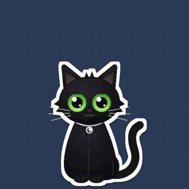

Loon lives in the corner of your Mac, blinks at you, follows your cursor, and naps when you're busy. Highlight anything confusing and it helps right there. No chatbot tab, no copy-paste, no API keys.
Small, helpful, and right where you're working. Most answers come from plain code in milliseconds, so it stays fast even on a tiny model.
Select a word and the definition pops up instantly. Foreign text is translated offline. A scary stack trace gets explained.
Press ⌥⇧V and just talk. Speech-to-text, end-of-turn detection, and the cat's voice all run on your Mac.
Real price per unit (yes, even "12 × 330 ml"), best value, review summaries, and a compare basket. Pure math, no guessing.
"Quiz me" turns any text or your notes into fill-in-the-blank cards, graded in code. Explain, simplify, summarize.
Errors explained from a curated table, JSON into Java or TypeScript types, and "where did I leave off?" project briefings.
Memories become a little graph of people, projects, sites and topics, grouped into domains. Ask about one thing and Loon follows the links. Explore it in Settings.
"Search YouTube for lofi and play the first one." Loon clicks, types and scrolls step by step, asking first for every change. Never passwords or payments. Esc stops it.
Custom instructions, reply length and tone, and "Remember this?" when you mention a preference. Say "shorter please" and it sticks.
"What's my day?", reminders, calendar events, and a focus timer where the cat naps quietly. Everything asks first.
Fix grammar, make it shorter, warmer or more professional, and drop it right back into the text box.
Loon routes every question to the smallest thing that can answer it well. Most requests never touch an AI model at all, and the hard ones can use the Claude or ChatGPT plan you already pay for, instead of a paid API.
Same question, or one that means the same thing? Answered instantly from a local cache.
Dictionary, offline translator, unit-price math, error tables, quiz grading. Never makes up numbers.
A free open-source model (Qwen3) answers everyday questions. Its answer gets a self-check before you see it.
Trickier questions, or a first answer that looked unsure, get one automatic upgrade.
Opt-in. The truly hard ones go through the official Claude Code or Codex app you're already signed into, or an API key you choose (Gemini has a free tier). Tools off, secrets redacted, never on private pages.
The router rates each question easy, medium or hard in plain code, checks small-model answers before you see them (and upgrades once if they look unsure), remembers which kinds of questions needed help before, and labels every answer with where it came from.
On banking or password pages, Loon covers its eyes and looks away.
Needs a Mac with Apple Silicon and Node.js 20+. Chrome is optional, for the browser powers.
# grab the cat $ git clone https://github.com/akankshyam07/loon $ cd loon $ npm install $ npm start # a black cat appears, bottom-right ✧
chrome://extensions, turn on Developer mode, and load the extension/ folder.